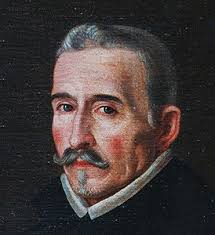
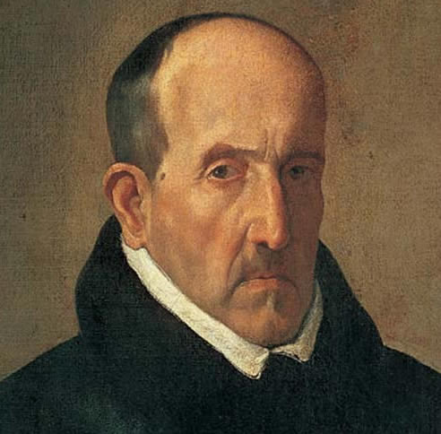

Lope de Vega |
Columna 2 | |
|---|---|---|
 | Félix Lope de Vega y Carpio (Madrid, 25 de noviembre de 1562 - Madrid, 27 de agosto de 1635) fue uno de los más importantes poetas y dramaturgos del Siglo de Oro español y, por la extensión de su obra, uno de los más prolíficos autores de la literatura universal. | |
Luis de Gongora |
||
| Luis de Góngora y Argote (Córdoba, 11 de julio de 1561 - Córdoba, 23 de mayo de 1627) fue un poeta y dramaturgo español del Siglo de Oro, máximo exponente de la corriente literaria conocida como culte ranismo o gongorismo. |
 |
|